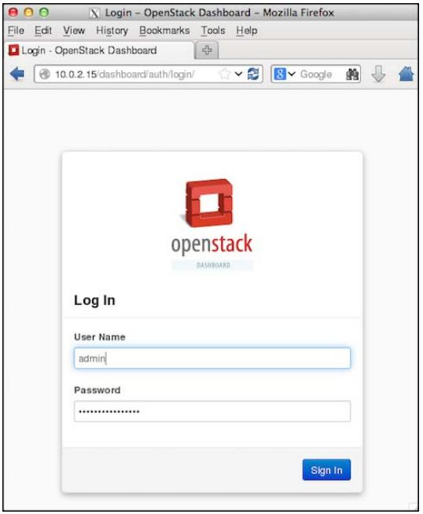
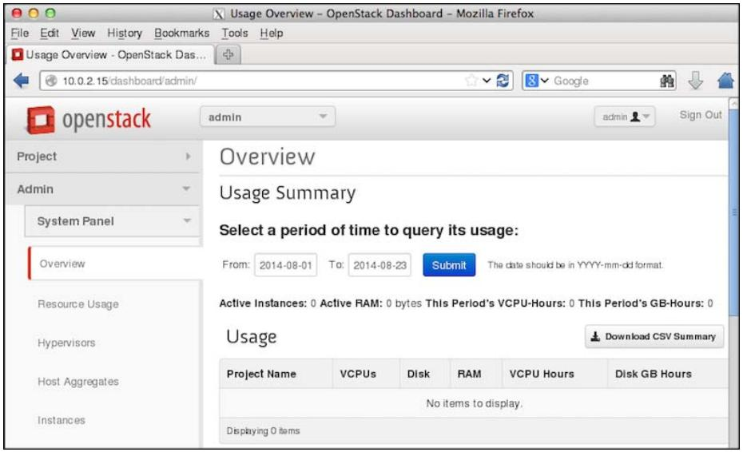
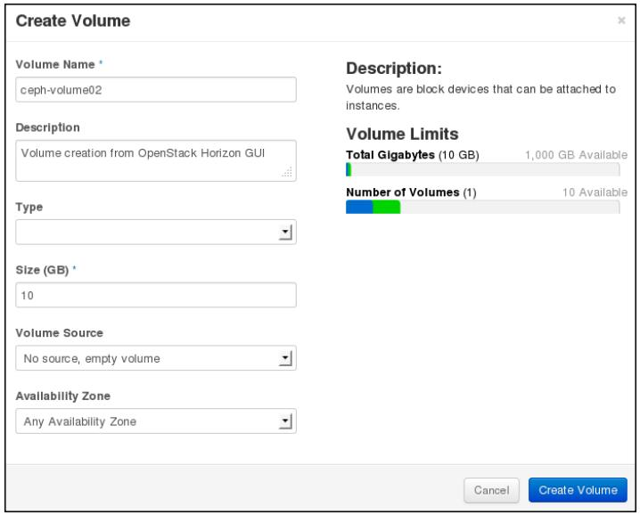
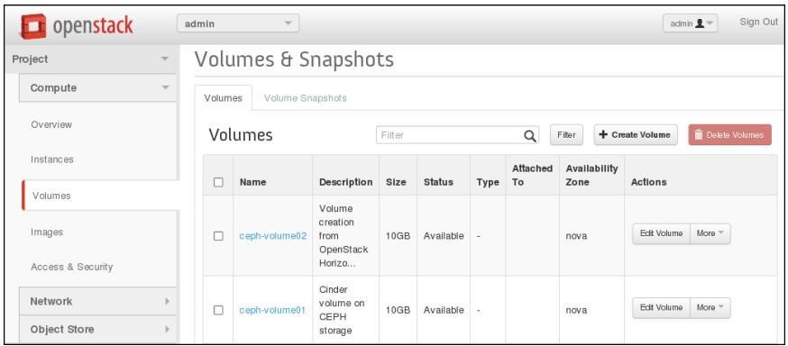

Глава 9. Включение Ceph в состав OpenStack
Каждой облачной платформе необходимо устойчивое, надежное, масштабируемое, поддерживающее весь необходимый функционал решение для хранения данных которое удовлетворяет всем ее требованиям по рабочим нагрузкам. Ceph удивительно быстро выступило в качестве решения облачного хранилища, которое бесшовно интегрируется с OpenStack и другими облачными платформами. Уникальная, унифицированная и распределенная архитектура Ceph делает ее правильным выбором для основы облачного хранилища.
В данной главе мы рассмотрим следующие темы:
-
Введение в OpenStack
-
Ceph - наилучшее соответствие для OpenStack.
-
Создание среды OpenStack
-
Интеграция Ceph и OpenStack
Содержание
OpenStack является свободной платформой программного обеспечения с открытым исходным кодом, для построения и управления общедоступными и частными облачными вычислительными платформами. Она управляется независимой некоммерческой организацией, известной как фонд OpenStack. Она имеет наибольшее и самое активное сообщество, поддерживаемое такими технологическими гигантами как HP, Red Hat, Dell, Cisco, IBM, Rackspace и многими, многими другими. Основная идея OpenStack для облака заключается в том, что оно должно быть простым для реализации и массивно масштабируемым.
OpenStack рассматривается как облачная операционная система, которая позволяет пользователям незамедлительно разворачивать сотни виртуальных машин автоматизированным способом. Она также обеспечивает эффективное, не имеющее преград управление этими машинами. OpenStack известна своими возможностями динамичного увеличения и уменьшения масштаба, а также распределенной архитектурой,делающими ваше облачное окружение устойчивым и готовым к будущему.
OpenStack предоставляет платформу уровня предприятия класса инфраструктура-как-служба (IaaS, Infrastructure-as-a-service) для всех ваших облачных потребностей. Ниже приводится архитектура OpenStack:
OpenStack состоит из отдельных различных программных компонентов которые работают совместно чтобы обеспечивать облачные службы. Сообщество OpenStack идентифицировало девять ключевх компонентов, которые составляют ядро OpenStack.
-
Nova: Это вычислительная часть которая разработана для управления и автоматизации пулов вычислительных ресурсов и может работать с различными технологиями виртуализации, такими как QEMU/KVM, Xen, Hyper-V, VMware, bare metal и контейнеры Linux.
-
Swift: Обеспечивает OpenStack возможности хранилища объектов.
-
Cinder: Компонента блочного хранения, предоставляющая постоянно хранимые тома для экземпляров OpenStack.
-
Glance: Служба образов для OpenStack, которая делает развертывание виртуальных машин легким и быстрым.
-
Neutron: Компонента сетевой среды для OpenStack.
-
Horizon: Инструментальная панель управления OpenStack.
-
Keystone: Предоставляет службу идентификации для OpenStack, а также управляет аутентификацией в OpenStack.
-
Ceilometer: Обеспечивает службы телеметрии OpenStack и позволяет провайдерам облаков службы выписки счетов и прогнозирования трафика (billing), а также автоматического масштабирования.
-
Heat: Компонента координации (orchestration) в OpenStack.
![[Замечание]](../common/images/admon/note.png) | Замечание |
|---|---|
|
Для получения дополнительной информации по OpenStack посетите http://www.openstack.org/. |
В последние несколько лет OpenStack приобрела удивительную популярность, поскольку она полностью определяется программным обеспечением, вне зависимости от того, используется ли она для вычислений, коммуникаций или даже для хранения. Когда вы обсуждаете о хранении для OpenStack, Ceph получает все преимущества. Ceph предоставляет устойчивую, надежную основу хранения, которую ищет OpenStack. Он бесшовно интегрируется с такими компонентами OpenStack, как Cinder, Glance, Nova и keystone, что обеспечивает всю-в-одном основу облачного хранилища для OpenStack. Перечислим некоторые ключевые преимущества, которые делают Ceph лучшим выбором для OpenStack.
-
Ceph предоставляет основу хранения класса предприятия с богатым функционалом при очень низкой стоимости за гигабайт, что помогает удерживать низкую стоимость развертывания OpenStack.
-
Ceph является единым решением хранения блоков, файлов и объектов для OpenStack, позволяя приложениям использовать хранилище так, как им нужно.
-
Ceph предоставляет расширенные возможности блочного хранения для облаков OpenStack, которые включают легкое-и-быстрое раскручивание, резервирование и клонирование виртуальных машин.
-
Он предоставляет экземплярам OpenStack постоянно хранимые тома по умолчанию, которые способны работать как обычные серверы, в которых данные не очищаются при перезагрузке виртуальных машин.
-
Ceph поддерживает возможность для OpenStack быть независимой от хостов путем обеспечения миграции виртуальных машин и расширения масштабов компонент хранилища без влияния на виртуальные машины.
-
Он предоставляет функционал моментальных снимков томам OpenStack, которые также могут использоваться как средство для резервирования.
-
Возможности Ceph по клонированию в режиме копирования при записи (copy-on-write) позволяет OpenStack раскручивать множество экземпляров за один раз, что помогает большим временным затратам механизма инициализации.
-
Ceph поддерживает богатые интерфейсы хранения объектов совместимые как с Swift, так и с S3.
Сообщества Ceph и OpenStack тесно работают на протяжении последних лет, чтобы сделать интеграцию более бесшовной, а также использовать новые свойства, которые они запускают. В будущем мы ожидаем, что OpenStack и Ceph станут еще ближе друг другу, благодаря приобретению фирмой Red Hat Inktank, компании, поддерживающей Ceph, поскольку Red Hat является одним из основных участников проекта OpenStack.
В данном разделе мы развернем тестовую среду OpenStack с одним узлом, которая позже в данной главе будет использована для интеграции с Ceph. Для развертывания OpenStack мы будем использовать дистрибутив OpenStack Red Hat, называемый RDO, который является версией OpenSatck сообщества открытого кода Red Hat. Для получения дополнительной информации по RDO OpenStack посетите http://openstack.redhat.com/.
Для выполнения установки OpenStack с одним узлом, мы создадим виртуальную машину с именем
os-node1. Нам нужно установить операционную систему на этой новой виртуальной машине.
В нашем случае мы установим CentOS 6.4; если вы пожелаете, вы также можете выбрать любую другую операционную систему на
основе RHEL вместо CentOS. Выполните следующие шаги:
-
Создайте новую виртуальную машину VirtualBox для установки OpenStack:
# VboxManage createvm --name os-node1 --ostype RedHat_64 --register # VBoxManage modifyvm os-node1 --memory 4096 --nic1 nat -- nic2 hostonly --hostonlyadapter2 vboxnet1 # VBoxManage storagectl os-node1 --name "IDE Controller" --add ide --controller PIIX4 --hostiocache on --bootable on # VBoxManage storageattach os-node1 --storagectl "IDE Controller" --type dvddrive --port 0 --device 0 --medium CentOS-6.4-x86_64-bin-DVD1.iso
Замечание Вы должны указать правильный абсолютный путь к ISO- файлу с CentOS в параметре
--mediumдля приведенной выше команды.# VBoxManage storagectl os-node1 --name "SATA Controller" --add sata --controller IntelAHCI --hostiocache on --bootable on # VBoxManage createhd --filename OS-os-node1.vdi --size 10240 # VBoxManage storageattach os-node1 --storagectl "SATA Controller" --port 0 --device 0 --type hdd --medium OS-osnode1.vdi # VBoxManage startvm os-node1 --type gui
-
Когда виртуальная машина создана и запущена, установите операционную систему CentOS, следуя документации по установке ОС, доступной на https://access.redhat.com/site/documentation/en-US/Red_Hat_Enterprise_Linux/6/html/Installation_Guide/index.html. В процессе установки обеспечьте для хоста имя
os-node1. -
Когда вы успешно установите операционную систему, измените настройки сети этой машины. Убедитесь, что вы редактируете файл с правильным именем сетевого устройства; в нашем случае сетевыми устройствами являются
eth2иeth3(существует вероятность, что имена устройств могут изменить свои названия в вашей среде, однако это не должно создать проблем). Когда файлы настройки сетевых устройств отредактированы, перезапустите сетевые службы. Выполните следующие шаги для изменения настройки сети:-
Измените файл
/etc/sysconfig/network-scripts/ifcfg-eth2и добавьте:ONBOOT=yes BOOTPROTO=dhcp
Измените файл
/etc/sysconfig/network-scripts/ifcfg-eth3и добавьте:ONBOOT=yes BOOTPROTO=static IPADDR=192.168.57.201 NETMASK=255.255.255.0Измените файл
/etc/hostsи добавьте:192.168.57.101 ceph-node1 192.168.57.102 ceph-node2 192.168.57.103 ceph-node3 192.168.57.200 ceph-client1 192.168.57.201 os-node1 -
-
Убедитесь, что новый узел,
os-node1, может взаимодействовать с узлами кластера Ceph:# ping ceph-node1 # ping ceph-node2 # ping ceph-node3
-
Поскольку данная установка предназначена для тестирования, вам следует запретить межсетевой экран и установить
selinuxвpermissiveчтобы избежать усложнений:# setenforce 0 # service iptables stop
В данном разделе мы представим вам пошаговую инструкцию для установки редакции Icehouse OpenStack RDO. Если вам интересно ознакомиться с установкой RDO OpenStack, посетите http://openstack.redhat.com/Quickstart
-
Обновите текущие пакеты операционной системы чтобы избежать предостережения/ошибки вызванные несовместимостью версий пакетов:
# yum update -y
-
Установите пакеты RDO:
# yum install -y https://repos.fedorapeople.org/repos/openstack/openstack-icehouse/rdo-release-icehouse-4.noarch.rpm
-
Установите пакеты OpenStack packstack:
# yum install -y openstack-packstack
-
Наконец запустите установку компонентов OpenStack с использованием
packstack, который выполнит абсолютно свободную от ручной работы установку OpenStack:# packstack --allinone
Applying 10.0.2.15_ring_swift.pp 10.0.2.15_ring_swift.pp: [ DONE ] Applying 10.0.2.15_swift.pp Applyi ng 10.0.2.15_provision_demo.pp 10.0.2.15_swift.pp: [ DONE ] 10.0.2.15_provision_demo.pp: [ DONE ] Applying 10.0.2.15_mongodb.pp 10.0. 2.15_mongodb.pp: [ DONE ] Applying 10.0.2.15_ceilometer.pp Applying 10.0.2.15_nagios.pp Applyi ng 10.0.2.15_nagios_nrpe.pp 10.0.2.15_ceilometer.pp: [ DONE ] 10.0.2.15_nagios.pp: [ DONE ] 10.0.2.15_nagios_nrpe.pp: [ DONE ] Applying 10.0.2.15_postscript.pp 10.0. 2.15_postscript.pp: [ DONE ] Applying Puppet manifests [ DONE ] Finalizing [ DONE ] **** Installation completed successfully ******
-
После того, как
packstackвыполнит установку, он отобразит некоторую дополнительную информацию, включающую URL инструментальной панели OpenStack Horizon и полномочия, которые могут быть использованы для работы с OpenStack:Additional information: * A new answerfile was created in: /root/packstack-answers-20140823-195321.txt * Time synchronization installation was skipped. Please note that unsynchronized time on s erver instances might be problem for some OpenStack components. * File /root/keystonerc_admin has been created on OpenStack client host 10.0.2.15. To use the command line tools you need to source the file. * To access the OpenStack Dashboard browse to http://10.0.2.15/dashboard . Please, find your login credentials stored in the keystonerc_admin in your home directory. * To use Nagios, browse to http://10.0.2.1S/nagios username: nagiosadmin, password: bd9321 71484e4e16 * Because of the kernel update the host 10.0.2.15 requires reboot. * The installation log file is available at: /var/tmp/packstack/20140823-195320-YSt3Kn/ope nstack-setup.log * The generated manifests are available at: /var/tmp/packstack/20140823-195320-YSt3Kn/mani fests [root@os-node1 ~]#
-
Полномочия для регистрации с учетной записью администратора будут сохранены в файле
/root/keystone_rc[root@os-node1 ~]# cat /root/keystonerc_admin export OS_USERNAME=admin export OS_TENANT_NAME=admin export OS_PASSWORD=1da01eb3782e4b88 export OS_AUTH_URL=http://10.0.2.15:5000/v2.0/ export PSl='[\u@\h \W(keystone_admin)]\$ ' [root@os-node1 ~]#
-
Наконец откроем веб браузер, в строк навигации введем URL инструментальной панели OpenStack Horizon и применим полномочия пользователя с правами администратора:

-
Теперь вы развернули среду OpenStack с одним узлом, которая готова к интеграции с Ceph. Вам будет представлен следующий экран:

OpenStack является модульной системой, которая имеет уникальные компоненты для конкретного набора задач. Существуют определенные компоненты, которым необходимы надежные системы хранения данных, подобные Ceph и расширяют полную интеграцию с ними, как это показано на следующем рисунке. Каждый из этих компонентов использует Ceph своим собственным способом для хранения блочных устройств и объектов. Большинство облачных реализаций, основанных на OpenStack и Ceph, используют Cinder, Glance и Swift, интегрированные с Ceph. Интеграция keystone используется когда вам нужно S3- совместимое хранилище объектов на системе хранения Ceph. Интеграция Nova делает возможной загрузку с томов со способностями Ceph для вашего облака OpenStack.
Узлы OpenStack должны быть клиентами Ceph, чтобы быть способными осуществлять доступ к кластеру Ceph. Для этого установите пекеты Ceph на узлы OpenStack и убедитесь, что они могут осуществлять доступ к кластерам Ceph:
-
Чтобы установить пакеты Ceph на узлы OpenStack, воспользуйтесь утилитой
ceph-deployс любого из узлов мониторов Ceph. В нашем случае мы используемceph-node1для установки пакетов Ceph с применением инструментарияceph-deploy:# ceph-deploy install os-node1
-
Используйте
ceph-deployдля копирования колец ключей клиентов Ceph с правами администраторов на узлы OpenStack:# ceph-deploy admin os-node1
-
Проверьте кольцо ключей Ceph и файл настройки в
/etc/cephна узле OpenStack и попытайтесь соединиться с кластером:[root@os-node1 ~]# ls -l /etc/ceph total 12 -rw-r—-r—-. 1 root root 137 Aug 24 00:25 ceph.client.admin.keyring -rw-r—-r-—. 1 root root 573 Aug 24 00:25 ceph.conf -rwxr-xr-x. 1 root root 92 Jul 30 04:36 rbdmap [root@os-node1 -]# [root@os-node1 -]# ceph -s cluster 07a92ca3-347e-43db-87ee-e0a0a9f89e97 health HEALTH_OK monmap e3: 3 mons at {ceph-node1=192.168.57.101:6789/0fceph-node2=192.168.57.102:6789/0, ceph-node3=192.168.57.103:6789/0}, election epoch 1060, quorum 0,1,2 ceph-node1,ceph-node2,ce ph-node3 mdsmap e96: 1/1/1 up {0=ceph-node2=up:active} osdmap e869: 9 osds: 9 up, 9 in pgmap v4931: 1536 pgs, 13 pools, 1352 kB data, 2650 objects 509 MB used, 82335 MB / 82844 MB avail 1536 active+clean [root@os-node1 ~]#
На данный момент времени ваш узел OpenStack ceph-node1 может соединяться с вашим
кластером. Теперь мы настроим Ceph для OpenStack. Чтобы сделать это, выполните следующие команды с
ceph-node1, если специально не оговорен другой узел:
-
Создайте выделенные пулы Ceph для OpenStack Cinder и Glance. Убедитесь в использовании надлежащего числа групп размещения для вашей среды:
# ceph osd pool create volumes 128 # ceph osd pool create images 128
-
Создайте нового пользователя для Cinder и Glance чтобы использовать аутентификацию cephx:
# ceph auth get-or-create client.cinder mon 'allow r' osd 'allow class-read object_prefix rbd_children, allow rwx pool=volumes,allow rx pool=images' # ceph auth get-or-create client.glance mon 'allow r' osd 'allow class-read object_prefix rbd_children, allow rwx pool=images'
-
Создайте файлы колец ключей для созданных новых пользователей
client.cinderиclient.glanceи предоставьте им доступ в качестве пользователей OpenStack Cinder и Glance:# ceph auth get-or-create client.cinder | tee /etc/ceph/ceph.client.cinder.keyring # chown cinder:cinder /etc/ceph/ceph.client.cinder.keyring # ceph auth get-or-create client.glance | tee /etc/ceph/ceph.client.glance.keyring # chown glance:glance /etc/ceph/ceph.client.glance.keyring
Замечание Проверьте что файл
/etc/ceph/ceph.confимеет полномочия на чтение для пользователей Cinder. Обычно он должен иметь полномочия 644. -
Процесс
libvirtтребует доступа к кластеру Ceph при подключении и отключении блочных устройств от Cinder и создании временной копии ключаclient.cinderкоторый будет добавлен кlibvirtна следующем шаге:# ceph auth get-key client.cinder | tee /tmp/client.cinder.key
-
Добавьте ключ безопасности
libvirtи удалите временную копию ключаclient.cinder:-
Создайте UUID:
# uuidgen
-
Создайте файл безопасности со следующим содержанием и убедитесь, что вы используете UUID, который вы сгенерировали на предыдущем этапе:
cat > secret.xml <<EOF <secret ephemeral='no' private='no'> <uuid>63b033bb-3305-479d-854b-cf3d0cb6a50c</uuid> <usage type='ceph'> <name>client.cinder secret</name> </usage> </secret> EOF -
Определите ключ и храните значение ключа в безопасности. Нам потребуется это секретное значения на последующих шагах:
# virsh secret-define --file secret.xml
[root@os-node1 ceph]# uuidgen 63b033bb-3305-479d-854b-cf3d0cb6a50c [root@os-node1 ceph]# [root@os-node1 ceph]# cat > secret.xml «EOF > <secret ephemeral='no' private='no'> > <uuid>63b033bb-3305-479d-854b-cf3d0cb6a50c</uuid> > <usage type='ceph'> > <name>client.cinder secret</name> > </usage> > </secret> > EOF [root@os-node1 ceph]# virsh secret-define -—file secret.xml Secret 63b033bb-3305-479d-854b-cf3d0cb6a50c created
Замечание Ключ безопасности, созданный на этом шаге обычно тот же, что и UUID.
-
Установите значение ключа и удалите временные файлы.Удаление файлов не является обязательным; это делается только для очистки сситемы:
# virsh secret-set-value --secret 63b033bb-3305-479d-854bcf3d0cb6a50c --base64 $(cat /tmp/client.cinder.key) && rm/tmp/client.cinder.key secret.xml
[root@os-node1 ceph]# virsh secret-set-value -—secret 63b033bb-3305-479d-854b-cf3d0cb6a50c -—base64 $(cat /tmp/client.cinder.key) && rm /tmp/client.cinder.key secret.xml Secret value set rm: remove regular file '/tmp/client.cinder.key'? y rm: remove regular file secret.xml'? y [root@os-node1 ceph]#
-
В настоящий момент времени мы завершили настройку с точки зрения Ceph. Дальше мы выполним настройку компонентов OpenStack Cinder, Glance и Nova для использования Ceph. Cinder поддерживает множество систем хранения. Чтобы настроить Cinder для использования Ceph измените файл настройки Cinder и определите драйвер RBD,который должен будет использовать OpenStack Cinder.
Чтобы сделать это вы должны также определить имя пула, который мы создали для томов Cinder ранее. На своем узле OpenStack
отредактируйте файл /etc/cinder/cinder.conf и внесите следующие изменения:
-
Дойдите до раздела
Options defined in cinder.volume.managerв файле/etc/cinder/cinder.confи добавьте драйвер RBD для Cinder:volume_driver=cinder.volume.drivers.rbd.RBDDriver -
Дойдите до раздела
Options defined in cinder.volume.drivers.rbdв файле/etc/cinder/cinder.confи добавьте (замените UUID безопасности на значение вашего окружения) следующим:rbd_pool=volumes rbd_user=cinder rbd_ceph_conf=/etc/ceph/ceph.conf rbd_flatten_volume_from_snapshot=false rbd_secret_uuid=63b033bb-3305-479d-854b-cf3d0cb6a50c rbd_max_clone_depth=5 -
Дойдите до раздела
Options defined in cinder.common.configв файле/etc/cinder/cinder.confи добавьте:glance_api_version=2Замечание Если вы используете множество систем хранения, данный параметр должен быть помещен в раздел
[default]файла/etc/cinder/cinder.conf. -
Сохраните файл настройки Cinder и выйдите из редактора.
Чтобы загрузить экземпляры OpenStack непосредственно в Ceph, т.е. загрузиться с применением свойств тома, вы
должны настроить эфемерное устройство хранения для Nova. Чтобы успешно выполнить это измените
/etc/nova/nova.conf:
-
Дойдите до раздела
Options defined in nova.virt.libvirt.imagebackendи добавьте:images_type=rbd images_rbd_pool=rbd images_rbd_ceph_conf=/etc/ceph/ceph.conf -
Дойдите до раздела
Options defined in nova.virt.libvirt.volumeи добавьте (замените UUID безопасности значением вашей среды):rbd_user=cinder rbd_secret_uuid=63b033bb-3305-479d-854b-cf3d0cb6a50c
OpenSatck Glance способен поддерживать множество систем хранения. В данном разделе мы научимся настраивать OpenSatck Glance использовать Ceph для хранения образов Glance:
-
Чтобы использовать блочное устройство Ceph для хранения образов Glance измените файл
/etc/glance/glance-api.confи добавьте:-
Предложение
default_store=rbdдля разделаdefaultв файлеglance-api.conf -
Дойдите до раздела
RBD Store Optionsв файлеglance-api.confи добавьте:rbd_store_user=glance rbd_store_pool=images -
Если у вас существует необходимость в копировании при записи (copy-on-write), установите
show_image_direct_url=True
-
-
Сохраните файл настройки Glance и выйдите из редактора.
Чтобы изменения вступили в силу вы должны перезапустить службы OpenStack с применением следующих команд:
# service openstack-glance-api restart # service openstack-nova-compute restart # service openstack-cinder-volume restart
Вы можете работать с Cinder с применением CLI или GUI. Сейчас мы протестируем Cinder из каждого из этих интерфейсов.
Выполните следующие шаги:
-
Получите исходный код файла OpenStack RDO
keystonerc_admin, который будет автоматически создан объявлением установки OpenStack:# source /root/keystonerc_admin
-
Создайте ваш первый том Cinder с объемом 10ГБ, который должен быть создан на вашей системе хранения Ceph по умолчанию:
# cinder create --display-name ceph-volume01 --displaydescription "Cinder volume on CEPH storage" 10
[root@os-node1 ~(keystone_admin)]# cinder create —-display-name ceph-volume01 —display-description "Cinder volume on CEPH storage" 10 +------------------------------------------------------------+ | Property | value | +---------------------+--------------------------------------+ | attachments | [] | | availability_zone | nova | | bootable | false | | created at | 2014-O8-24TO0:09:48.299357 | | display_description | Cinder volume on CEPH storage | | display.name | ceph-volume01 | | encrypted | False | | id | 00a90cd9-c2ea-4154-b045-6a837ac343da | | metadata | {} | | size | 10 | | snapshot_id | None | | source_volid | None | | status | creating | | volume_type | None | +---------------------+--------------------------------------+ [root@os-node1 ~(keystone_admin)]# -
Пока OpenStack Cinder создает ваш том, вы можете осуществить мониторинг вашего кластера с помощью
#ceph -s, где вы пронаблюдаете за операциями записи в кластере. -
Наконец, проверьте состояние вашего тома Cinder; убедитесь, что состояние вашего тома Cinder является available:
# cinder list
[rootgos-node1 ~(keystone_admin)j# [root@os-node1 ~(keystone_admin)]# cinder list +--------------------------------------+-----------+---------------+------+-------------+-----------+-------------+ | ID | Status | Display Name | Size | volume Type | Bootable | Attached to | +--------------------------------------+-----------+---------------+------+-------------+-----------+-------------+ I 00a90cd9-c2ea-4154-b045-6a837ac343da | available | ceph-volumeOl | 10 | None | false | | +--------------------------------------+-----------+---------------+------+-------------+-----------+-------------+ [rootgos-node1 ~(keystone_admin)j#
Вы можете создавать тома Cinder и управлять ими из инструментальной панели Horizon. Откройте веб интерфейс OpenStack Horizon и найдите раздел томов:
-
Кликните на Create volume и заполните поля подробностей о томе:

-
Когда вы создадите том из GUI Horizon, он отобразит состояние ваших томов:

-
Наконец проверьте ваш пул томов Ceph; вы можете найти объекты в вашем пуле Ceph, содержащем том с ID. Например, вы можете идентифицировать имя объекта, а именно
rbd_id.volume-00a90cd9-c2ea-4154-b045-6a837ac343daдля тома Cinder c именемceph-volume01, имеющий идентификатор00a90cd9-c2ea-4154-b045-6a837ac343daв пуле томов Ceph:[root@os-node1 ~(keystone_admin)]# cinder list +--------------------------------------+-----------+---------------+------+-------------+----------+-------------+ | ID | Status | Display Name | Size | volume Type | Bootable | Attached to | +--------------------------------------+-----------+---------------+------+-------------+----------+-------------+ | 00a90cd9-c2ea-4154-b045-6a837ac343da | available | ceph-volume01 | 10 | None | false | | | ce8bl344-80d8-42d6-8e22-8c4dl7abcfeb | available | ceph-volume02 | 10 | None | false | | +--------------------------------------+-----------+---------------+------+-------------+----------+-------------+ [root@os-node1 ~(keystone_admin)]# [root@os-node1 ~(keystone_admin)]# rados -p volumes ls rbd_di rectory rbd_header.4c381910a0d0 rbd_header.4a885399b49f rbd_id.volume-ce8b1344-80d8-42d6-8e22-8c4d17abcfeb rbd_id.volume-00a90cd9-c2ea-4154-b045-6a837ac343da [root@os-nodel -(keystone_admi n)]#
-
Вы можете подключать эти тома к экземплярам виртуальных машин OpenStack как блочные хранилища и осуществлять к ним доступ на основе ваших потребностей.
Вы можете использовать OpenStack Glance для хранения образов операционных систем для экземпляров. Эти образы в конечном итоге будут сохраняться в системе хранения Ceph.
Выполните следующие шаги для тестирования OpenStack Glance:
-
Перед добавлением образа Glance проверьте пул образов Ceph. Поскольку мы не импортировали никакие образы, пул Ceph должен быть пустым:
# rados -p images ls
-
Загрузите образы, которые могут быть использованы в OpenStack через интернет:
# wget http://cloud-images.ubuntu.com/precise/current/preciseserver-cloudimg-amd64-disk1.img
[root@os-node1 glance(keystone_admin)]# wget http://cloud-images.ubuntu.com/precise/current/precise-server-cloodimg-ajnd64-diskl.img --2014-08-26 19:39:26-- http://cloud-images.ubuntu.com/precise/current/precise-server-cloudimg-amd64-disk1.img Resolving cloud-images.ubuntu.com... 91.189.88.141 connecting to cloud-images.ubuntu.com|91.189.88.1411:80... connected. HTTP request sent, awaiting response... 200 OK Length: 261227008 (249M) [application/octet-stream] Saving to: “precise-server-cloudimg-and64-diskl.img” 100%[=============================================================================================>) 261.227.008 6.46M/s in 52s 2014-08-26 19:40:19 (4.76 mb/s) - “precise-server-cloudimg-amd64-disk1.img” saved [261227008/261227008] [root@os-node1 glance(keystone_admin)]#
-
Создайте образ Glance:
# glance image-create --name=&ubuntu-precise-image& --ispublic=True --disk-format=qcow2 --container-format=ovf < precise-server-cloudimg-amd64-disk1.img
[root@os-node1 glance(keystone_admin)]# glance image-create -—name="ubuntu-precise-image" -—is-public=True -—disk-format=qcow2 —-container-format=ovf < precise-server-cloudimg-amd64-disk1.img +-------------------+--------------------------------------+ | Property | Value | +-------------------+--------------------------------------+ | checksum | 23034c4e06f9f012099d61d4a4e5248d | | container_format | ovf | | created_at | 2014-08-26T16:49:33 | | deleted | False | | deleted_at | None | | disk_format | qcow2 | | id | 249cc4be-474d-4137-80f6-dc03f77b3d49 | | is_public | True | | min_disk | 0 | | min_ram | 0 | | name | ubuntu-precise-image | | owner | a84af521b50f41bba704f8dc0e1ae15d | | protected | False | | size | 261227008 | | status | active | | updated_at | 2014-08-26T16:50:18 | | virtual_size | None | +-------------------+--------------------------------------+ [root@os-node1 glance(keystone_admin)]# -
Проверьте список образов Glance,а также сделайте запрос к вашему пулу образов Ceph для получения идентификаторов образов Glance:
# glance image-list # rados -p images ls | grep -i 249cc4be-474d-4137-80f6-dc03f77b3d49[root@os-node1 glance(keystone_admin)]# glance image-list +----------------------------------------+----------------------+-------------+------------------+------------+---------+ | ID | Name | Disk Format | Container Format | Size | Status | +----------------------------------------+----------------------+-------------+------------------+------------+---------+ I dll84d23-b568-49f2-9aa7-le4d2e915224 | cirros | qcow2 | bare | 13147648 | active | | 249cc4be-474d-4137-80f6-dc03f77b3d49 | ubuntu-precise-image | qcow2 | ovf | 261227008 | active | +----------------------------------------+---------------------+-------------+-------------------+------------+---------+ [root@os-node1 glance(keystone_admin)]# [root@os-node1 glance(keystone_admin)]# rados -p images ls | grep -i 249cc4be-474d-4137-80f6-dc03f77b3d49 rbd_id.249cc4be-474d-4137-80f6-dc03f77b3d49 [root@os-node1 glance(keystone_admin)]#
-
Вывод предыдущей команды подтверждает, что мы импортировали образ Ubuntu в OpenStack Glance, который был сохранен в томах образов Ceph.
В данной главе мы обсудили OpenStack и его компоненты, а также как они бесшовно интегрируются с Ceph. Демонстрационный раздел поможет вам изучить интеграцию OpenStack в пошаговом режиме, а затем протестировать каждую компоненту OpenStack. В следующей главе мы сосредоточимся на некоторых основных хитростях настройки производительности вашего кластера Ceph, а также на эталонном тестировании вашего кластера.